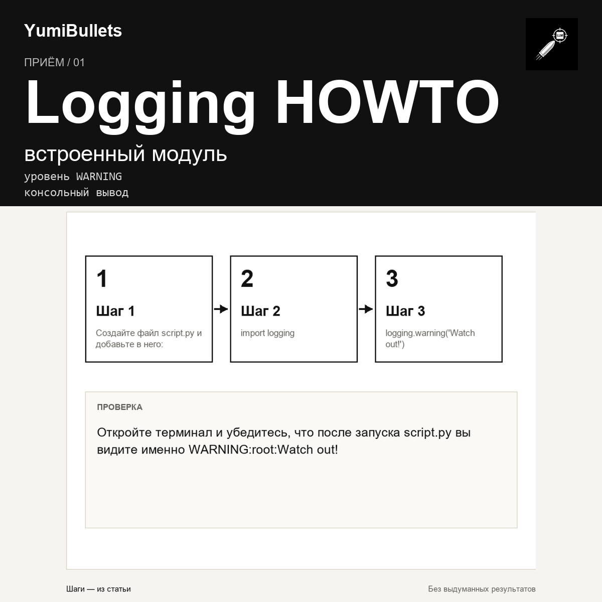

Записать предупреждение через logging и убедиться, что оно видно в консоли
Вы пишете скрипт на Python и хотите отмечать события, но не уверены, какой инструмент выбрать. В руководстве Python Logging HOWTO есть конкретный совет: для случая, когда клиентское приложение ничего не может сделать с ситуацией, но событие всё равно нужно отметить, используйте метод логгера warning(). Этот приём покажет, как записать такое предупреждение и как убедиться, что оно появилось в консоли.